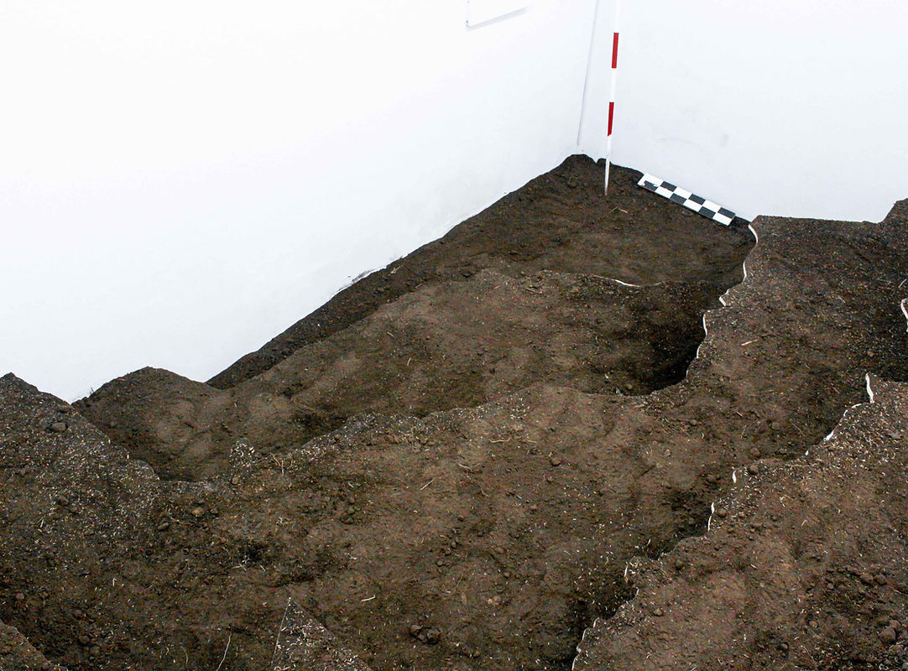
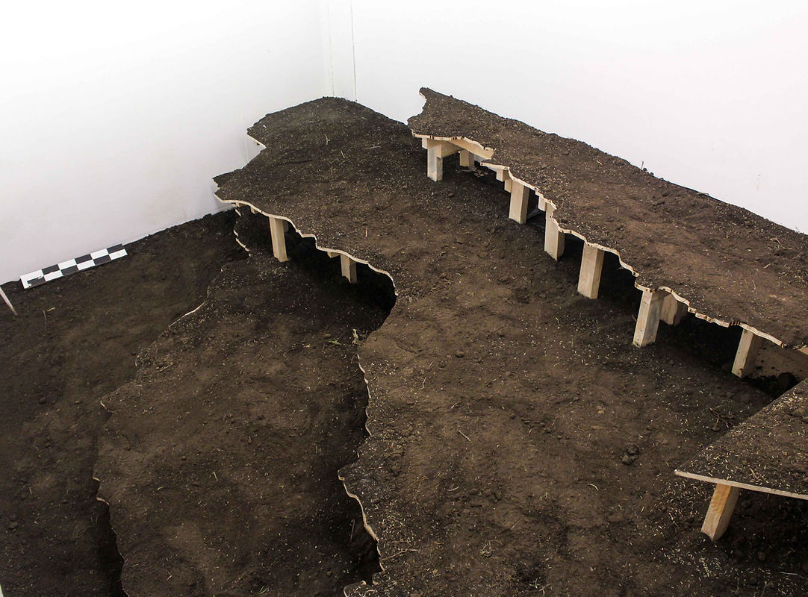
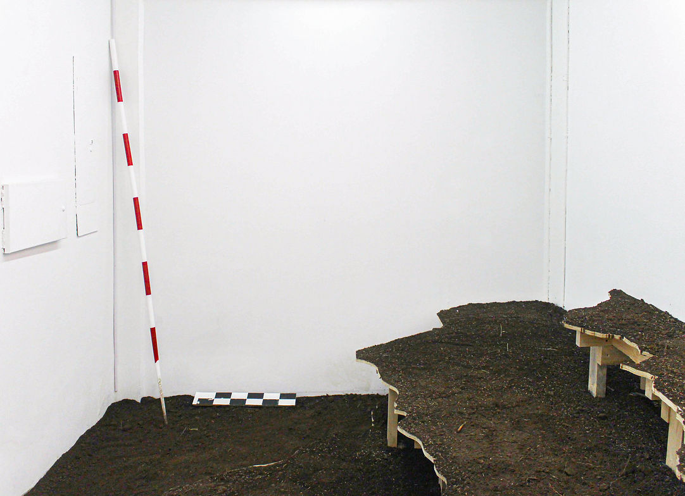
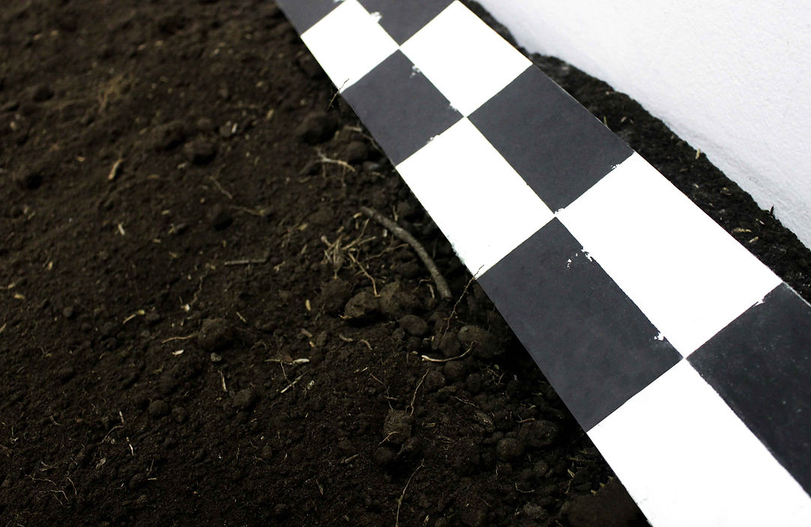
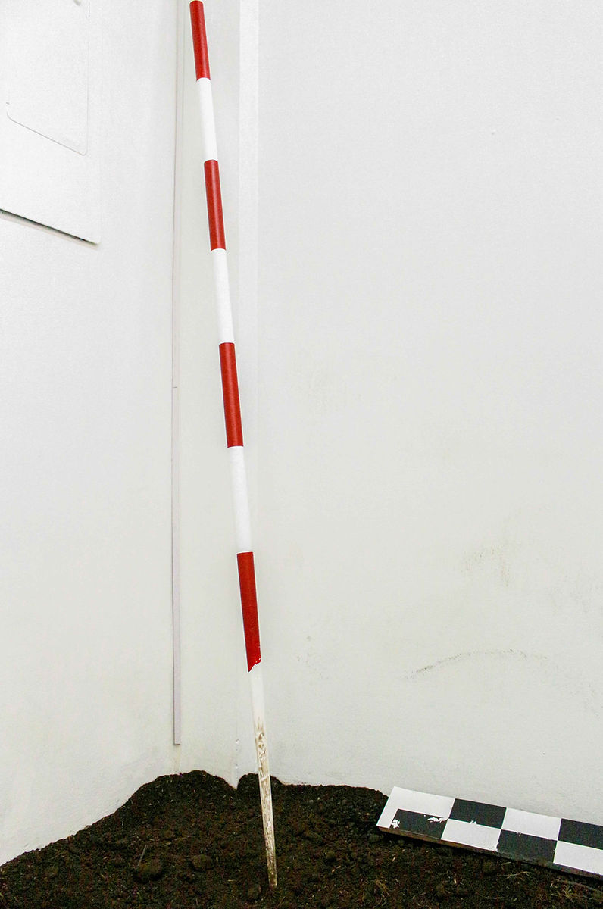
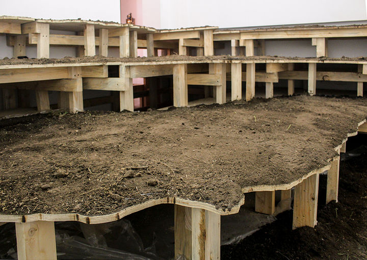
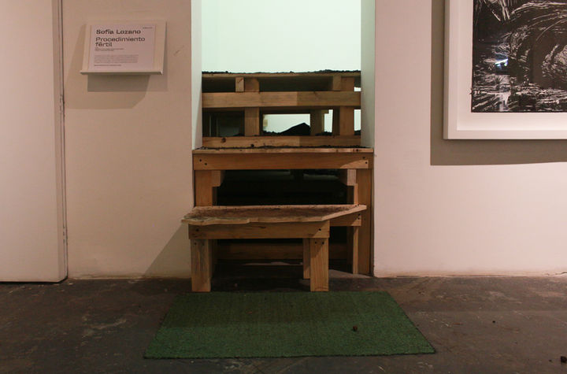

fertile procedure
28 October 2023 - 10 February 2024
Espacio El Dorado - Bogotá.
Winning project of the “En Blanco” open call.
The act of digging names an archaeological procedure: the idea of displacing, taking away, removing. Before that exercise, a study has already been made of the territory and of whether it warrants excavation —whether there are signs that a settlement once stood there (pictograms, monuments). Procedimiento fértil probes and proposes a moment prior to Colombia’s recent history: before drug trafficking, before the constitution, before the military coups and other social movements; before any notion of Nation. And yet the first archaeological excavations in Colombia took place at the beginning of the twentieth century, that is, alongside many of those events. The Earth is therefore the protagonist in our relations of power and dominion, but also in what it means to unearth. In any historical scenario it appears as a motive that generates rootedness, attachment or discord. Making a “hole” or a “transfer” thus dislocates the idea of building, possessing and settling. The site of excavation is the place that holds what later comes to be called heritage. It is where the fragments of a reality lie —too dead to understand, too alive to speculate on and imagine. A pattern (taking the definition from design and psychology) is a factor that recurs and tends to repeat. Here the pattern ends up adopting other forms, and steps outside its original function of establishing a relation to human scale. It is also an excavation without a find, concentrated solely on these gestures of measurement.

General view of the exhibition.

General view of the exhibition.

Installation. Soil, wood. Dimensions variable. 2023.
Drawing. “Escala”. Charcoal on paper. 2023.
Painting. “Vara de la interpretación”. Acrylic paint on cedar pole. 2023.

Detail. Chequered scale bar.

Detail of painting. “Vara de la interpretación”. Acrylic paint on cedar pole. 2023.

View of the lattice of wooden battens that supports the installation.

View from outside.